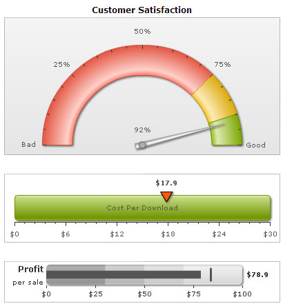

| Creating multiple charts in a single page |
Using FusionWidgets, you can embed any number of charts in a single HTML page. You can even combine charts from FusionCharts and PowerCharts, maps from FusionMaps, and gauges from FusionWidgets in the same page. In this example, we will add an Angular gauge, a Horizontal Linear gauge and a Bullet graph. The page will look as under:  Code examples and data files discussed in this section are present in Download Package > Code > MyFirstChart folder. We have used multiple XML files for this sample that are also present in the same folder. The process of embedding multiple charts is similar to that of embedding a single chart. You just need to take care of the following:
The following sample code embeds three charts into a single HTML page (multiple-charts.html): |
<html>
<head>
<script language="JavaScript" src="../Charts/FusionCharts.js"></script>
</head>
<body bgcolor="#ffffff">
<div id="chartContainerCustSatisfaction" align="center">
The chart will appear within this DIV. This text will be replaced by the chart.
</div>
<script type="text/javascript">
var myChart1 = new FusionCharts("../Charts/AngularGauge.swf", "myChartId1", "400", "200", "0", "0");
myChart1.setXMLUrl("Data.xml");
myChart1.render("chartContainerCustSatisfaction");
</script>
<div id="chartContainerDownload" align="center">
The chart will appear within this DIV. This text will be replaced by the chart.
</div>
<script type="text/javascript">
var myChart2 = new FusionCharts("../Charts/HLinearGauge.swf", "myChartId2", "400", "100", "0", "0");
myChart2.setXMLUrl("CostPerDownload.xml");
myChart2.render("chartContainerDownload");
</script>
<div id="chartContainerProfit" align="center">
The chart will appear within this DIV. This text will be replaced by the chart.
</div>
<script type="text/javascript">
var myChart3 = new FusionCharts("../Charts/HBullet.swf", "myChartId3", "400", "60", "0", "0");
myChart3.setXMLUrl("ProfitPerSale.xml");
myChart3.render("chartContainerProfit");
</script>
</body>
</html>
|
See it live! |
As you can see here, we've embedded three charts in the page:
We've used the same customer satisfaction XML data for angular gauge from our first chart example and also built 2 new XMLs for the linear gauge and bullet graph. We've not shown them here, as we'll cover them in the XML structure of the respective charts. When you finally view the HTML page (with some formatting applied to above code), you'll get a result as shown under: What happens if Flash player is not available?
In case Flash Player is not available on certain devices (like iPad/iPhone), FusionCharts JavaScript Class automatically renders the same chart using JavaScript. If you are running the sample from local file system, please note that you need to provide the data using Data String method, i.e., passing the data (XML/JSON) to the chart as String or JSON Object. Many browsers restrict JavaScript from accessing local file system owing to security reasons. In the above example, since you had provided data as a URL, the JavaScript charts will not be able to access the same, when running locally. If you run the files from a server, it will run absolutely fine, though. When running locally, if you provide the data as string (using the Data String method), it works fine. <html>
<head>
<script language="JavaScript" src="../Charts/FusionCharts.js"></script>
</head>
<body bgcolor="#ffffff">
<div id="chartContainerCustSatisfaction" align="center">
The chart will appear within this DIV. This text will be replaced by the chart.
</div>
<script type="text/javascript">
var myChart1 = new FusionCharts("../Charts/AngularGauge.swf", "myChartId1", "400", "200", "0", "0");
myChart1.setXMLData("<chart lowerLimit='0' upperLimit='100' "+
"lowerLimitDisplay='Bad' upperLimitDisplay='Good' showValue='1' numberSuffix='%'>"+
"<colorRange>"+
"<color minValue='0' maxValue='75' code='FF654F'/>"+
"<color minValue='75' maxValue='90' code='F6BD0F'/>"+
"<color minValue='90' maxValue='100' code='8BBA00'/>"+
"</colorRange>"+
"<dials>"+
"<dial value='92' />"+
"</dials>"+
"</chart>");
myChart1.render("chartContainerCustSatisfaction");
</script>
<div id="chartContainerDownload" align="center">
The chart will appear within this DIV. This text will be replaced by the chart.
</div>
<script type="text/javascript">
var myChart2 = new FusionCharts("../Charts/HLinearGauge.swf", "myChartId2", "400", "100", "0", "0");
myChart2.setXMLData("<chart bgColor='FFFFFF' lowerLimit='0' upperLimit='30' gaugeRoundRadius='5' "+
"showGaugeBorder='1' numberPrefix='$'> "+
"<colorRange>"+
"<color minValue='0' maxValue='30' name='Cost Per Download' />"+
"</colorRange>"+
"<pointers>"+
"<pointer value='17.9' borderColor='000000' borderThickness='0' "+
"bgColor='FF5904' toolText='My own' />"+
"</pointers>"+
"</chart>");
myChart2.render("chartContainerDownload");
</script>
<div id="chartContainerProfit" align="center">
The chart will appear within this DIV. This text will be replaced by the chart.
</div>
<script type="text/javascript">
var myChart3 = new FusionCharts("../Charts/HBullet.swf", "myChartId3", "400", "60", "0", "0");
myChart3.setXMLData("<chart palette='1' lowerLimit='0' upperLimit='100' "+
"caption='Profit' subCaption='per sale' roundRadius='5' numberPrefix='$' showValue='1'> "+
"<colorRange> "+
"<color minValue='0' maxValue='30' /> "+
"<color minValue='30' maxValue='50' /> "+
"<color minValue='50' maxValue='70' /> "+
"<color minValue='70' maxValue='85' /> "+
"<color minValue='85' maxValue='100' /> "+
"</colorRange> "+
"<value>78.9</value> "+
"<target>84</target> "+
"</chart>"";
myChart3.render("chartContainerProfit");
</script>
</body>
</html>
See it live! |